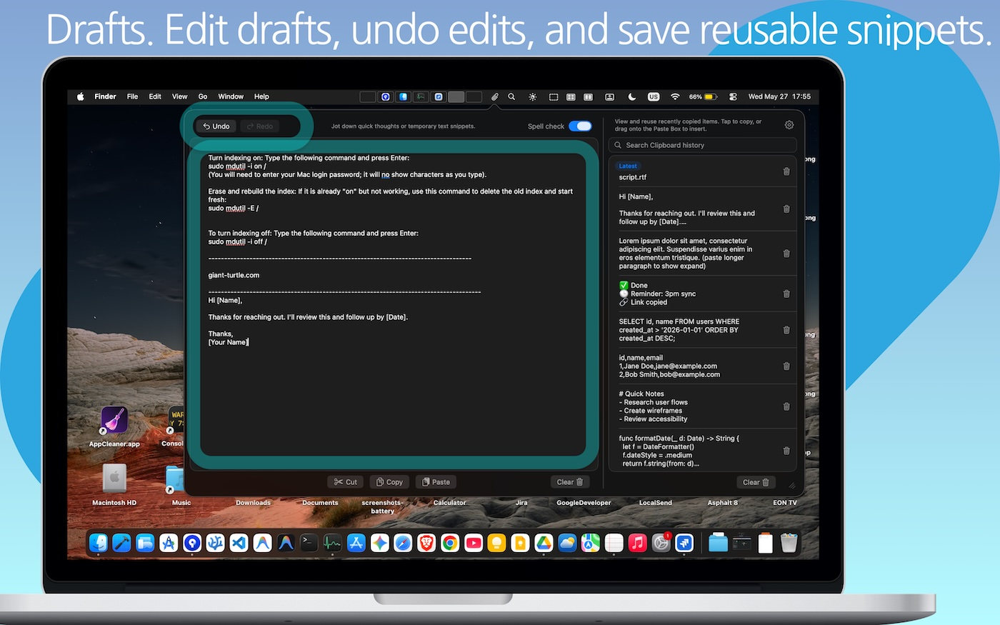
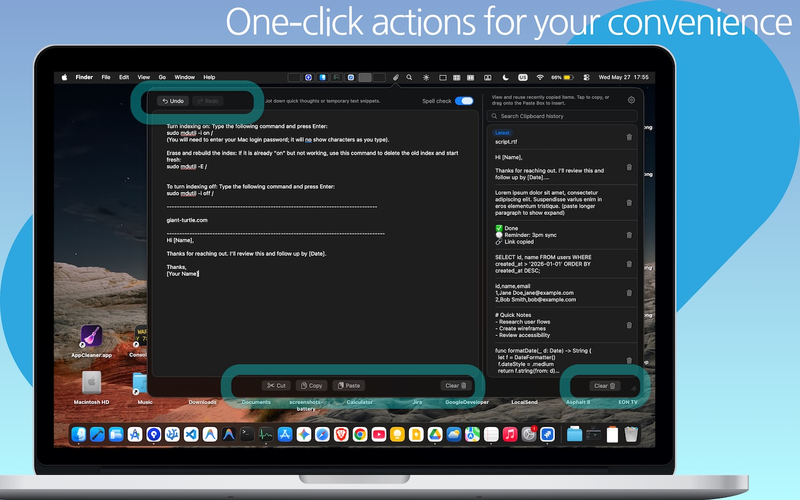

01The Single-Clipboard Trap (And Why History Alone Isn't Enough)
Out of the box, macOS still remembers only one copied item at a time. Copy a client's email, accidentally copy a tracking number before pasting, and the first snippet vanishes—forcing another context switch back to Slack or your browser.
Standard clipboard managers fix recall, but they ignore how you actually edit text between copying and pasting:
Passive History Only
- Store raw past copies, including broken HTML styles and stray line breaks.
- Force you to open Apple Notes or TextEdit just to combine or clean snippets.
- Leave behind dozens of untitled junk notes cluttering your Mac.
History + Active Scratchpad
- Keep every past text snippet, link, and code block searchable in milliseconds.
- Drag or click snippets straight into a persistent menu bar notepad.
- Clean, spell-check, and assemble drafts that survive system restarts.
02Meet Paste Box: History Meets Persistent Drafts
Paste Box lives quietly in your macOS menu bar with a native glassmorphic two-pane interface built for fast batch copying and active editing.
Unified History
Review every text, URL, or code snippet chronologically and batch-copy multiple items before pasting them in sequence.
Persistent Scratchpad
Jot working notes, email drafts, or temporary commands right in the popover—saved continuously across reboots.
Instant Search
Filter hours or days of copied SQL queries, links, and snippets with fast fuzzy matching in milliseconds.


03Smart Formatting, Spell Check & AI Prompt Staging
Working with ChatGPT, Claude, Gemini, or client emails involves constant copy-edit-paste cycles. Paste Box streamlines that whole loop in one popover:
Built-In Spell Check
Catch typos inside the scratchpad before pasting into Slack, emails, or pull requests.
Clean Plain Text
Strip hidden web HTML spans, rogue fonts, and whitespace noise with one-click text actions.
AI Prompt Staging
Pull multiple snippets from history into your scratchpad to assemble structured LLM prompts before hitting send.

04Privacy First: 100% Local, Zero Cloud Sync
2FA codes, API keys, proprietary code, and client emails pass through your clipboard every day. Sending that stream to third-party sync servers introduces unnecessary risk.
Many commercial clipboard utilities require user accounts and upload every copy to proprietary cloud servers. Paste Box keeps 100% of your clipboard history and drafts inside your Mac's sandboxed local storage—no accounts, no cloud sync, and zero telemetry.
05Default macOS vs. Generic Managers vs. Paste Box
| Feature | Default macOS | Generic Managers | Paste Box |
|---|---|---|---|
| Clipboard History | 1 Item Only | Yes | Unlimited & Searchable |
| Persistent Scratchpad | None | History only | Built-In Persistent Drafts |
| Data Privacy | Local | Often Cloud-Synced | 100% Local & Sandboxed |
| Plain-Text & Spell Check | Complex shortcuts | Basic | 1-Click Actions + Spell Check |
| macOS Integration | N/A | Often dated | Native Universal Binary |
06Frequently Asked Questions
Does macOS have a built-in clipboard history manager?
No. Default macOS only stores your most recent copy. Pressing Cmd + C on something new permanently overwrites the previous item unless you run a clipboard utility like Paste Box.
Is my clipboard data ever uploaded to the cloud?
No. Paste Box is 100% local and offline—all history entries and scratchpad notes remain inside your Mac's sandboxed container.
Does Paste Box support both Apple Silicon and Intel Macs?
Yes. Paste Box ships as a native Universal Binary for Apple Silicon (M1–M4) and Intel Macs, supporting macOS Ventura, Sonoma, and Sequoia.
Can I search through past copies from hours or days ago?
Yes. The built-in instant search bar uses fast fuzzy matching so you can locate copied text, URLs, or code blocks in milliseconds.